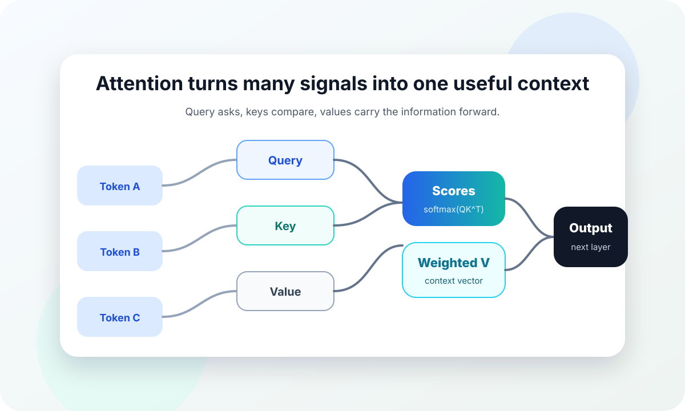

- / -
如果你已经会写 Markdown，那么 Quarkdown 的学习曲线其实很短。你可以继续用 # 写标题，用 **加粗** 写重点，用列表整理结构；需要更强排版能力的时候，再加入以点号开头的函数调用，比如 .tableofcontents、.align、.box 和 .pagemargin。
这篇示例长文故意写得像一篇小论文：它有目录、章节、图片、引用、公式、脚注、提示框和结尾的资料链接。你可以把它当模板改成自己的文章。
这份文档的重点不是把注意力机制讲到数学最深处，而是演示 Quarkdown 怎么承载一篇结构完整、带图片、能导出 PDF 的长文。
人在阅读一句话的时候，不会平均对待每个词。比如看到“猫坐在键盘上，因为它觉得那里很暖”，我们自然会把“它”连接到“猫”，而不是“键盘”。这种连接并不是靠词语距离本身决定的，而是靠上下文中的相关性决定的。
注意力机制借用了这个直觉：当模型处理当前位置的信息时，它会查看其他位置，并给每个位置一个权重。权重越高，说明那个位置的信息越值得被当前任务使用。
在传统序列模型里，长距离依赖常常会被压缩在隐藏状态里。信息走得越远，越容易变淡。注意力机制把问题改写成：不要强迫所有信息走同一条狭窄通道，而是让每个位置在需要的时候主动去“看”其他位置。
想象你在写一篇读书笔记。桌上有很多卡片，每张卡片写着一个观点。你现在要写“作者为什么反对机械记忆”这一段，就不会把所有卡片等量参考一遍；你会优先拿起和“机械记忆”“理解”“迁移”有关的卡片。
注意力也是这样。它不是把输入压成一个单点，而是在每一步动态挑选材料。
Transformer 里的注意力通常会被解释成三个向量：Query、Key、Value。它们的名字有点像数据库检索：

图 把这个过程画成了一条信息流。Token 先被映射成 Query、Key 和 Value；Query 与 Key 比较后得到分数；分数经过归一化，最后用于加权 Value，形成新的上下文表示。
缩放点积注意力的经典形式是：
这里的 softmax 把分数变成概率分布，最后乘上
你可以把公式读成一句话：先问“我和谁最相关”，再按相关性把那些位置的信息混合进来。
如果只有一个注意力头，模型可能只学到一种观察角度。多头注意力让模型同时从多个子空间看同一句话。有的头可能关注语法关系，有的头可能关注指代关系，有的头可能关注局部搭配。
这很像多人一起审稿：一个人看结构，一个人看事实，一个人看语言。最后的意见不是简单投票，而是把不同视角合并成更丰富的判断。
考虑下面这句话：
研究者把模型放到更大的数据集上训练，因为他们希望验证方法是否稳定。
模型可能需要同时理解：
这些关系很难用单一注意力视角一次性表达完整。多头注意力提供了并行观察的空间。
Quarkdown 的好处在于：你可以先像写普通 Markdown 一样把内容写出来，再逐步加入排版能力。一个舒服的流程通常是：
.numbering 打开编号。.tableofcontents 生成目录。.doctype 设为 paged。quarkdown c main.qd --pdf 导出。普通 Markdown 的图片语法是：
Quarkdown 额外支持尺寸：
!(80%)[图片说明](assets/image.png)
!(640px)[图片说明](assets/image.png)
!(12cm)[图片说明](assets/image.png)如果图片单独占一段，Quarkdown 会把它当作 figure。你还可以加标题，并用 {#id} 给它一个引用 ID：
!(80%)[图片说明](assets/image.png "这是一张图") {#my-figure}
如图 .ref {my-figure} 所示，图片可以被交叉引用。有趣的是，注意力机制不只适合解释模型，也适合解释写作。写长文时，真正困难的不是把所有资料放进去，而是决定什么时候忽略什么。
一个清楚的段落往往只服务一个问题。它可能引用很多背景，但读者应该能感觉到这一段有一个中心。每当你把新材料塞进段落，都可以问一句：这个材料是在增强当前中心，还是把读者拉到另一条路上？
如果删掉这一句话，段落会不会更清楚？如果答案是“会”，那句话可能只是作者舍不得的材料，不是读者需要的材料。
注意力机制的核心并不神秘：它是一种动态选择信息的方式。Query 表达需求，Key 提供匹配线索，Value 提供可被使用的内容。多头注意力则让模型从多个角度同时观察输入。
而 Quarkdown 的核心也很朴素：保留 Markdown 的流畅写作体验，在需要时用函数补上专业排版能力。你可以把它用于课程讲义、论文草稿、技术文档、电子书和幻灯片。
Original credits: Attention Is All You Need